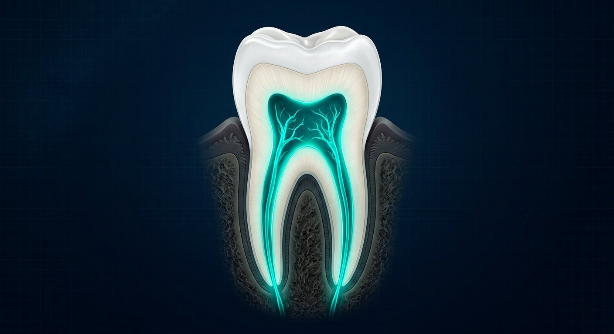
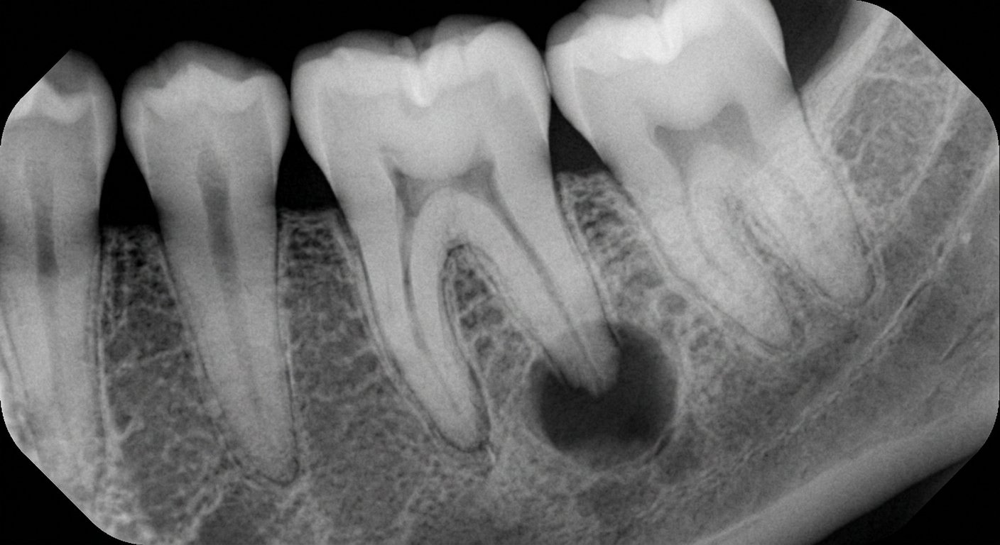
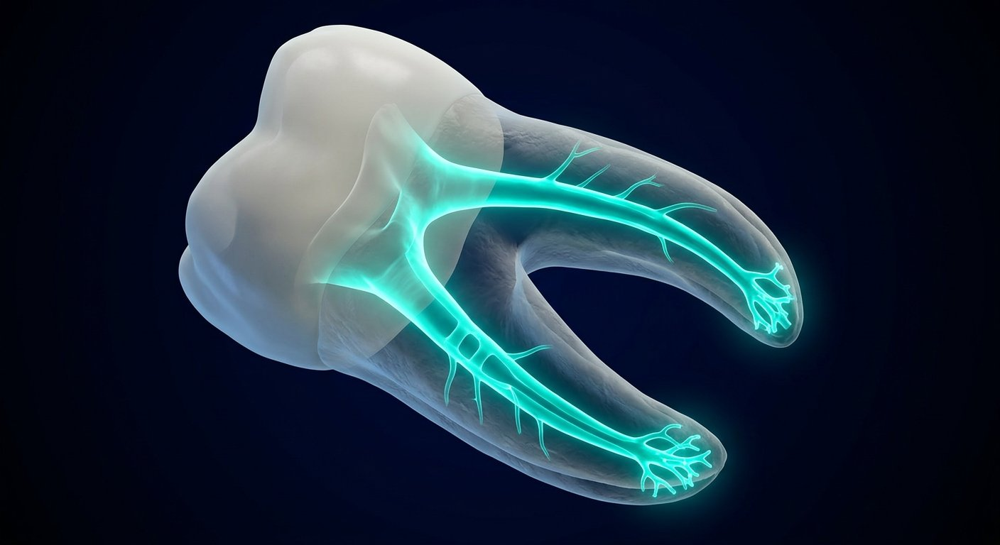
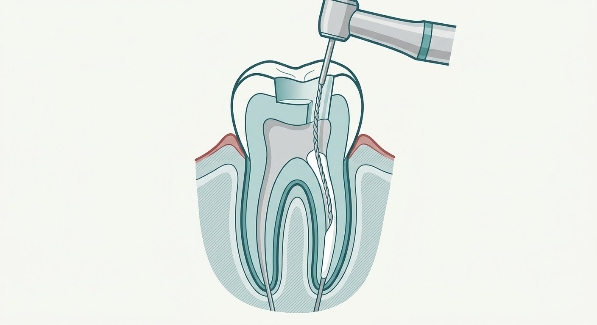
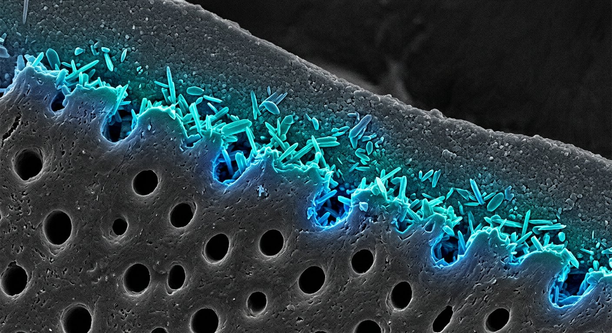
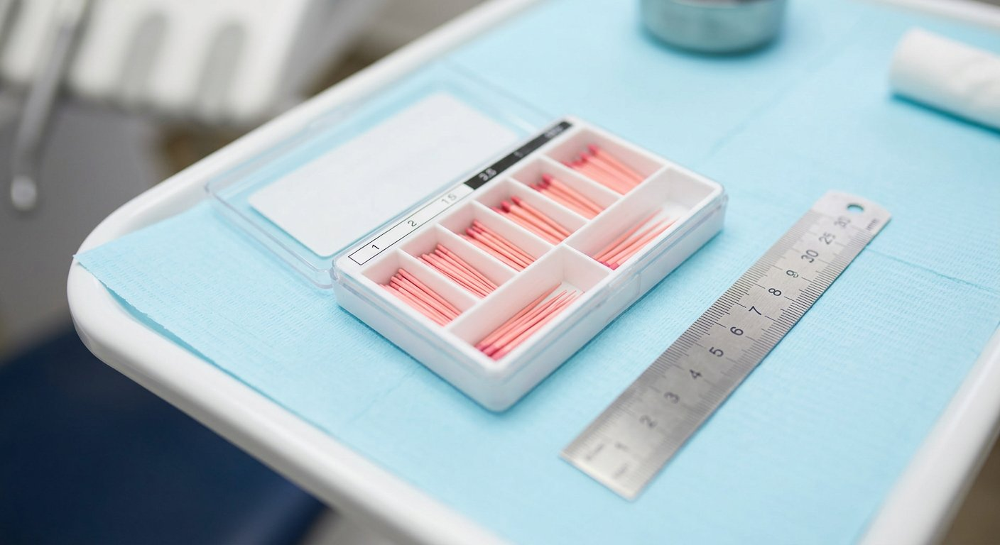
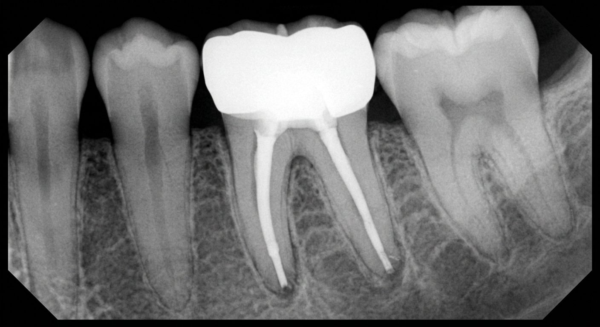
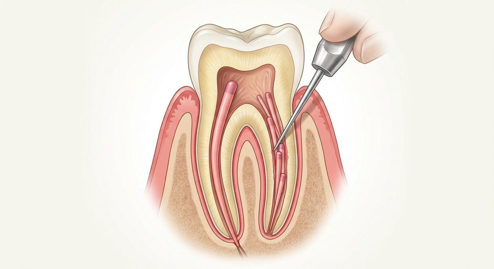
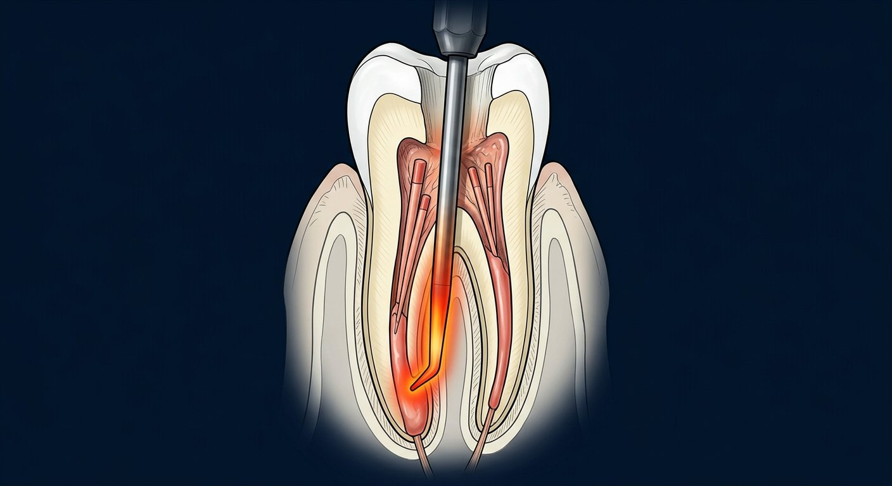
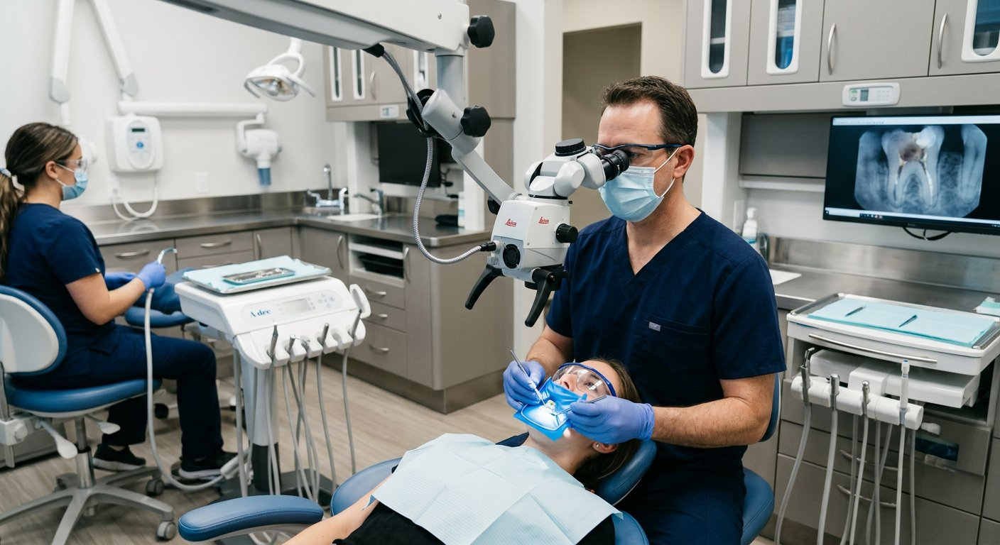

Grossman L.I., Endodontic Practice — ideal material hali yaratilmagan!
| Ko'rsatkich (ISO 6876) | Talab | Ma'nosi |
|---|---|---|
| Oqimtarlik (flow) | ≥ 17 mm | Lateral kanallarga kirish |
| Plyonka qalinligi | ≤ 50 mkm | Yupqa qatlam |
| Eruvchanlik | ≤ 3% | Uzoq germetiklik |
| Rentgenkontrast | ≥ 3 mm Al | Aniq ko'rinish |
| O'lcham o'zgarishi | +0,1% / −1% | Mikrosızıntı yo'q |
| Qotish vaqti | Deklaratsiyaga mos | Protokol rejalash |
Sealer xaridida ISO 6876 muvofiqligi — sifat kafolati!
Formula: Qotmaydigan (davolash) → O'zak + Sealer (doimiy obturatsiya)

| Guruh / Nomi | Tarkib | Mexanizm | Qo'llanilishi |
|---|---|---|---|
| Ca(OH)₂: Calcipaste, Metapaste, UltraCal XS | Kalsiy gidroksid + BaSO₄ | pH ≈ 12,5 — antibakterial, dentin ko'prigi | Pulpit, periodontit, apeksifikatsiya |
| Yodoformli: Metapex, Vitapex | Ca(OH)₂ + yodoform + silikon moyi | Uzoq antiseptik, rezorbsiyalanadi | Infeksiyalangan kanal, bolalar |
| Antibiotik+steroid: Ledermix | Demeklosiklin + triamcinolon | Og'riqsizlantiruvchi + yallig'lanishga qarshi | O'tkir og'riq, travma, rezorbsiya |
| Boshqalar: CHX-gel, formokrezol | Xlorheksidin / formalin-krezol | Antiseptik (tarixiy) | Kam qo'llaniladi |



Tanlov: anatomiya + jihoz + malaka



| Usul | Germetiklik | Qiyinlik | Jihoz | Ko'rsatma |
|---|---|---|---|---|
| Single-cone (ZOE / rezin) | O'rtacha | Oson | Minimal | Tor yumaloq kanal |
| Single-cone (biokeramik) | Yuqori | Oson | Minimal | Keng / oval kanal |
| Lateral kondensatsiya | Yuqori | O'rtacha | Spreader | Universal — oltin standart |
| Vertikal / uzluksiz to'lqin | Eng yuqori | Murakkab | System B, Obtura | Oval, egri kanallar |
| Thermafil / GuttaCore | Yuqori | O'rtacha | Maxsus pech | Juda egri kanallar |